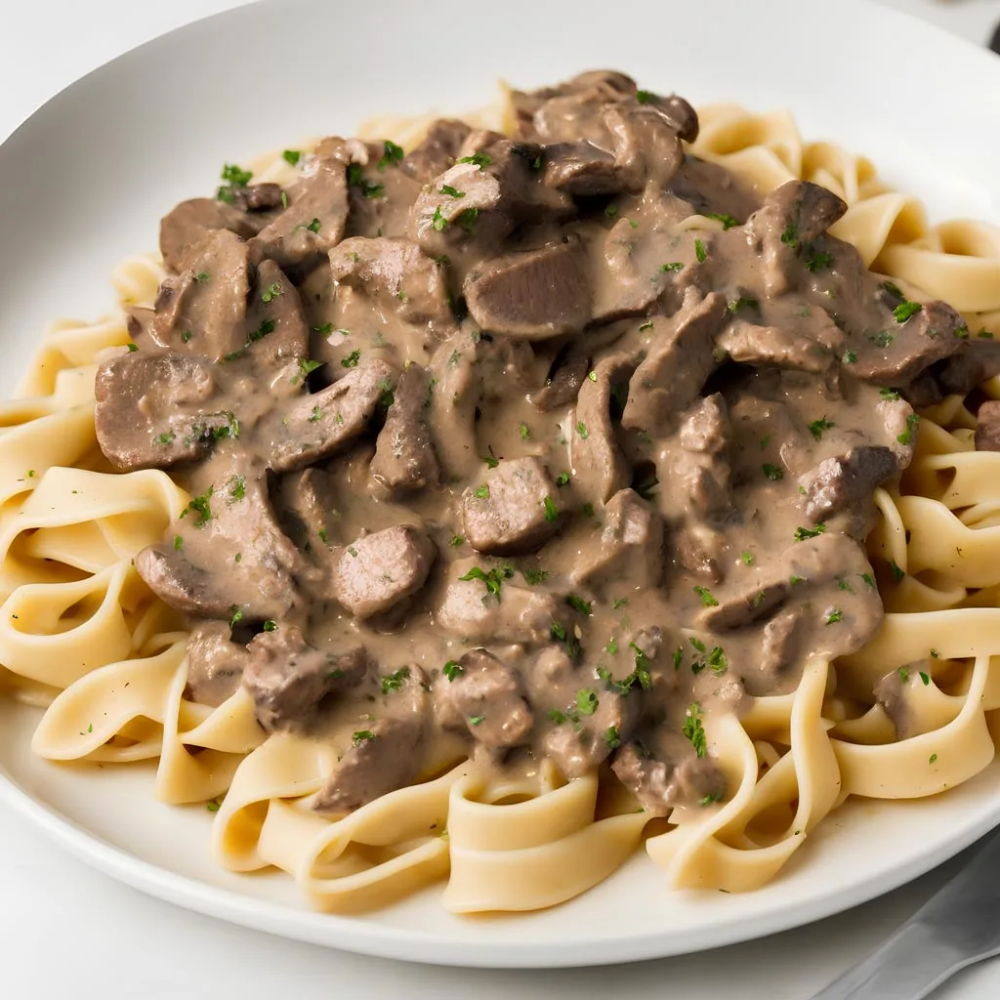

Home
Ground Beef Stroganoff Noodles

Description
One-Pan Ground Beef Stroganoff Noodles – Helping Hamburger Help Itself
Like most people who grew up during the Golden Age of processed food, my mom bought a fair amount of pre-packaged, pre-mixed, just-add-water type meals, but when it came to pasta or noodles in a ground meat sauce, her hamburger did not need any help. We did enjoy the occasional box of mac and cheese, or package of pop-tarts, but virtually all dishes like this ground beef stroganoff noodles were made from scratch.
Hamburger Helper was something other moms who didn't know how to cook served their kids, and while that might have been a touch hypocritical, since she may have been making pancakes from a box while saying it, we were grateful. Having said all that, I've had Hamburger Helper, and didn't hate it, and the idea of a quick, easy, one-pan meal involving meaty sauce coved noodles was a great one. So, I decided to share this homage.
There are many different shapes and sizes of egg noodles, so the one and only challenge with this recipe is their cooking time. Please just use my times as a guide, and keeping cooking, stirring occasionally, adding liquid as needed, until the noodles are perfect. Once they are, stir in the sour cream, and you're eating. If you add that before everything is done, it may split as it simmers. Other than that, not much can go wrong, and I really do hope you give this a try soon. Enjoy!
Ingridents
- 1 tablespoon unsalted butter
- 1 tablespoon vegetable oil
- 1 cup thinly sliced mushrooms
- 1 teaspoon salt, plus more to taste
- ½ cup diced onion
- 1 pound ground beef
- freshly ground black pepper
- freshly ground black pepper
- 2 cloves minced garlic
- 1 ⅓ tablespoons flour
- 2 tablespoons vodka (Optional)
- 2 ½ cups beef broth, or as needed
- 1 cup water
- 2 ½ cups egg noodles
- ½ cup sour cream, plus more for serving
- 2 tablespoons fresh sliced chives or green onions
Instructions
- Melt butter and oil in a skillet over medium-high heat. Add mushrooms, season with salt, and saute, stirring occasionally, until they turn golden brown, 5 to 10 minutes. Add onion and ground beef.
cook, stirring, until meat is browned and crumbly, and onions turn soft and translucent, about 5 minutes. Season with black pepper and cayenne.
- Stir in minced garlic and flour, and cook for 1 minute. Pour in vodka and allow to evaporate, about 30 seconds. Stir in beef broth and water and bring to a simmer.
Cook, stirring occasionally, for 10 minutes.
- Reduce heat to medium, and mix in noodles. Cover with a tight-fitting lid and simmer for 5 minutes. Uncover and stir thoroughly.
Cover again and cook until noodles are just tender, about 3 minutes. (See Cook's Note.)
- Once noodles are cooked, reduce heat to low, and stir in sour cream. Serve immediately with additional sour cream and green onions or chives if so desired.